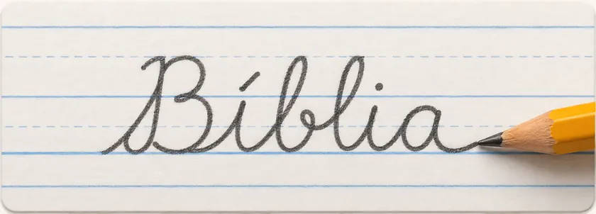
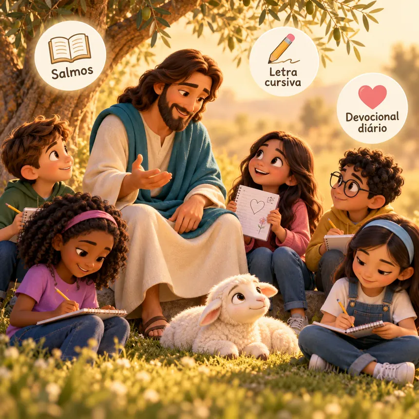
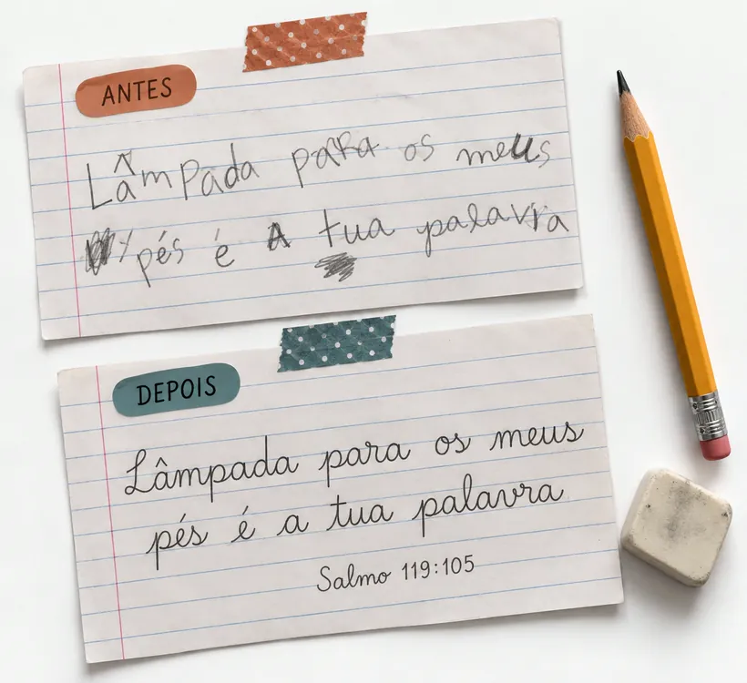
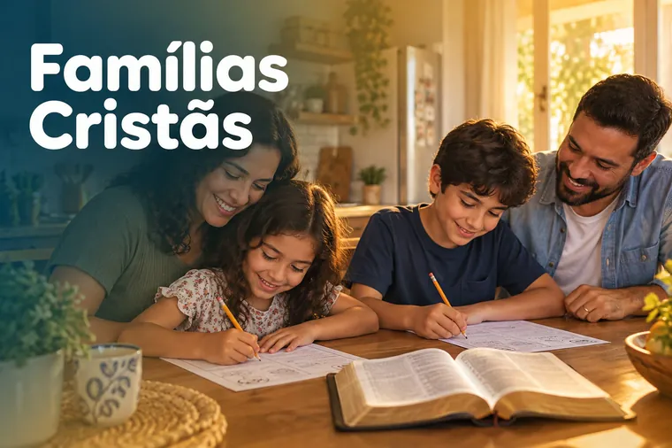
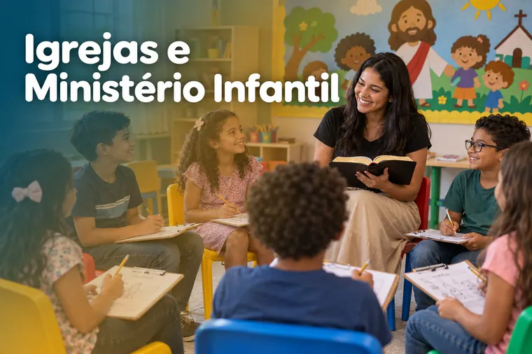
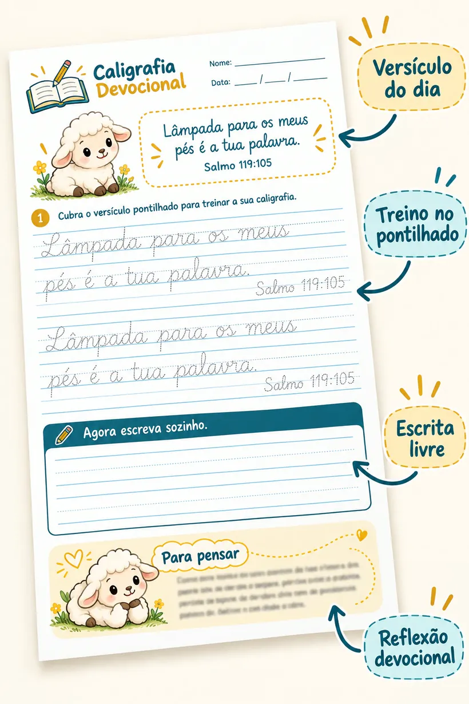
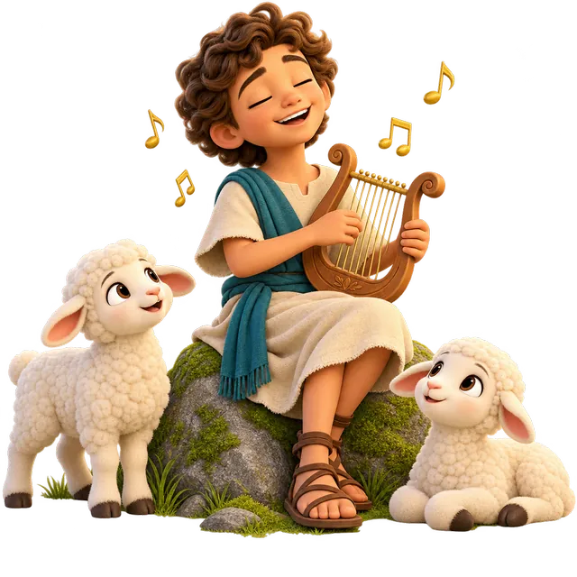
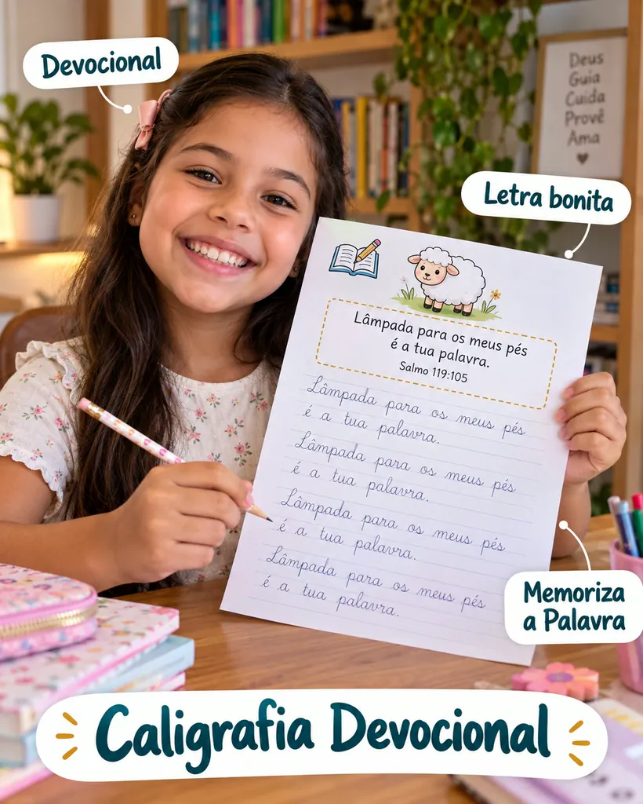

Renata OliveiraInstagram
“Esse material tem sido uma bênção! As atividades são lindas, bem elaboradas e ajudam as crianças a aprender sobre Deus de forma leve e divertida. Parabéns pelo trabalho! 💛🙏”
Foto de perfil e imagens ilustrativas
Caligrafia cursiva com os Salmos

Para crianças de 7 a 12 anos, em casa, na escola ou na igreja.
Um devocional escrito à mão
Cada linha, um versículo.
Cada dia, mais perto de Deus.

A Caligrafia Devocional junta duas coisas que todo pai cristão deseja: ver o filho escrevendo com capricho e crescendo na Palavra. Em cada página, a criança copia um versículo dos Salmos em letra cursiva, treina no pontilhado, escreve sozinha e termina com uma reflexão curta sobre o que escreveu.
“Guardo no coração as tuas palavras, para não pecar contra ti.”
Salmo 119:11 O que a criança escreve com as mãos, ela guarda no coração.
Comece hoje o devocional escrito da sua família
Custa menos que um lanche na cantina — e o que a criança aprende fica para a vida toda.
Oferta de lançamento
Aproveite enquanto este valor estiver no ar.
De R$ 39,90 por
R$19,90
50% OFF · você economiza R$ 20
Quero a Caligrafia Devocional“Contaremos à vindoura geração os louvores do Senhor.” Salmo 78:4
O dia a dia é corrido. As telas disputam a atenção das crianças o tempo todo, e sobra pouco espaço para algo simples que ensine, acalme e aproxime de Deus.
A Caligrafia Devocional nasceu para ocupar esse espaço.
Uma página por dia: a criança copia um trecho dos Salmos caprichando na letra cursiva e termina com uma reflexão curta que conversa com a vida dela.
Não é só um caderno de caligrafia.
É um devocional escrito à mão.

Por dentro do material
Páginas reais, prontas para imprimir. Toque para ampliar.
Como você recebe
Assim que o pagamento é aprovado, o material já é seu.
Compra rápida por Pix, cartão ou boleto.
O link de acesso chega no e-mail que você informar.
Arquivos em alta resolução, prontos para imprimir.
Uma página por dia, no ritmo da criança.
Imprima de novo sempre que precisar, para quantos filhos quiser.
O que dizem as famílias
“Esse material tem sido uma bênção! As atividades são lindas, bem elaboradas e ajudam as crianças a aprender sobre Deus de forma leve e divertida. Parabéns pelo trabalho! 💛🙏”
Foto de perfil e imagens ilustrativas
“Estou encantada com o conteúdo! As reflexões são profundas, fáceis de compreender e perfeitas para compartilhar com as crianças. Tenho usado em nossos encontros e o resultado está sendo maravilhoso! 🥰✨”
Foto de perfil e imagens ilustrativas
“Que trabalho especial! O material une criatividade, aprendizado e valores cristãos de uma maneira muito bonita. Que Deus continue inspirando vocês a alcançarem muitas famílias! 💙🙌”
Foto de perfil e imagens ilustrativas

Para pais que querem ver os filhos escrevendo bem e crescendo na fé, com uma rotina simples em casa.
Material de apoio para escolas cristãs e reforço escolar: caligrafia e valores bíblicos na mesma folha.

Pronto para EBD, culto infantil e discipulado: as crianças escrevem e memorizam os Salmos.
Para avós, tios e padrinhos que querem presentear com algo que fica para a vida toda.
Veja como é cada atividade por dentro:


Muitos Salmos foram escritos por Davi, o menino pastor que cantava para Deus enquanto cuidava das ovelhas. Agora é a vez do seu filho escrever essas mesmas palavras.
Oferta especial

Tudo isso por um
Valor de lançamento
De R$ 39,90 por apenas
50% OFF · desconto de R$ 20
ou parcelado no cartão
Quero melhorar a letra com os SalmosValor de lançamento por tempo limitado
“Ensina-nos a contar os nossos dias, para que alcancemos coração sábio.” Salmo 90:12
Os primeiros hábitos de fé nascem dentro de casa. Um tempo diário com a Palavra mostra à criança que Deus faz parte da rotina, e não só do domingo.
As telas ensinam alguma coisa o tempo todo. A Palavra também precisa de espaço. Cada página é um passo pequeno e firme na direção certa.
Quando a criança lê, escreve e pensa sobre um versículo, ela memoriza muito melhor. É a Palavra passando pela mão e chegando ao coração.
O material é 100% digital. Depois do pagamento, você recebe o acesso para baixar.
Arquivos em PDF de alta resolução (não editáveis), organizados para imprimir.
Não precisa imprimir tudo de uma vez. O acesso é vitalício.
Sente com a criança, escrevam o Salmo e conversem sobre a reflexão. Simples assim.
Pix, cartão de crédito (com opção de parcelamento) e boleto.
No Pix e no cartão, o acesso chega no seu e-mail em poucos minutos. No boleto, depois da compensação (até 2 dias úteis).
Não. É um material digital em PDF para você imprimir em casa ou na gráfica. Nada é enviado pelo correio.
Crianças de 7 a 12 anos que já conhecem as letras e estão aprendendo ou aperfeiçoando a letra cursiva.
Sim. O acesso é vitalício: imprima de novo sempre que precisar, inclusive para irmãos.
O risco é todo nosso
Confiamos no material que fizemos. Se depois de receber você achar que não é para a sua família, é só pedir o reembolso em até 7 dias e devolvemos 100% do valor. Sem perguntas.
Um material de atividades para imprimir em que a criança treina a letra cursiva copiando versículos dos Salmos e, em cada página, lê uma reflexão curta sobre o que escreveu. É caligrafia e devocional ao mesmo tempo.
Cada página tem o versículo em cursiva pontilhada para cobrir e depois um espaço para escrever sozinho. A repetição diária, com modelo e pauta de caligrafia, melhora o traçado, a regularidade e a legibilidade.
Para crianças de 7 a 12 anos. Quem está começando na cursiva aproveita o pontilhado. Quem já escreve aproveita a escrita livre e as reflexões.
Não. As reflexões falam do que une os cristãos: o amor de Deus, a confiança, a gratidão e a obediência à Palavra. Servem para qualquer igreja evangélica.
Uma tradução evangélica tradicional, fiel ao texto e de leitura clara para as crianças.
Sim. Professores, escolas cristãs e ministérios infantis usam como atividade complementar de escrita e memorização dos Salmos.
Ele complementa. A criança continua as atividades da escola e ganha um treino diário com propósito.
Por e-mail, logo após a confirmação do pagamento. Você baixa os PDFs e imprime quando quiser.
Você tem 7 dias de garantia. Peça o reembolso e devolvemos todo o valor.